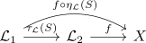
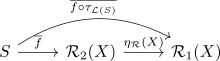

naturality of an adjunction with respect to natural transformations
Proposition
Let $\mathcal{C}, \mathcal{D}$ be categories and
be adjoint functors with $\mathcal{L}_i \dashv \mathcal{R}_i$ with unit $\eta_i$ and counit $\epsilon_i$
Suppose $\tau_{\mathcal{L}}: \mathcal{L}_1 \rightarrow \mathcal{L}_2$ is a natural transformation and
the (cf. equivalence of subcategories of left and right adjoints)
Then for $S \in \mathcal{C}, X\in \mathcal{D}$
this results in a
where $\overline{f}, \overline{f \circ \tau_{\mathcal{L}(S)}$ are the corresponding morphisms.Suppose $\tau_{\mathcal{L}}: \mathcal{L}_1 \rightarrow \mathcal{L}_2$ is a natural transformation and
the (cf. equivalence of subcategories of left and right adjoints)
Then for $S \in \mathcal{C}, X\in \mathcal{D}$

this results in a

where $\overline{f}, \overline{f \circ \tau_{\mathcal{L}(S)}$ are the corresponding morphisms.
and analogously
Proof
TODO